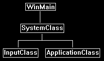
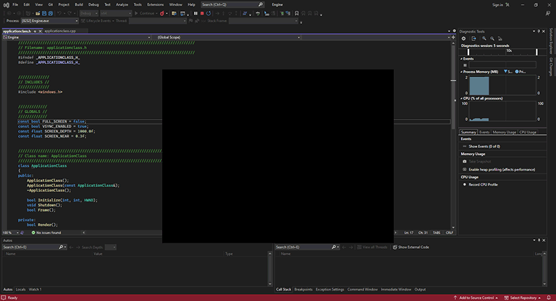

Before starting to code with DirectX 11 I recommend building a simple code framework.
This framework will handle the basic windows functionality and provide an easy way to expand the code in an organized and readable manner for the purposes of learning DirectX 11.
As the intention of these tutorials is just to try different features of DirectX 11, we will purposely keep the framework as thin as possible and not build a full rendering engine.
Once you have a firm grasp on DirectX 11 then you can research into how to build a modern graphics rendering engine.
The Framework
The frame work will begin with four items.
It will have a WinMain function to handle the entry point of the application.
It will also have a system class that encapsulates the entire application that will be called from within the WinMain function.
Inside the system class we will have an input class for handling user input and an application class for handling the DirectX graphics code.
Here is a diagram of the framework setup:

Now that we see how the framework will be setup lets start by looking at the WinMain function inside the main.cpp file.
WinMain
////////////////////////////////////////////////////////////////////////////////
// Filename: main.cpp
////////////////////////////////////////////////////////////////////////////////
#include "systemclass.h"
int WINAPI WinMain(HINSTANCE hInstance, HINSTANCE hPrevInstance, PSTR pScmdline, int iCmdshow)
{
SystemClass* System;
bool result;
// Create the system object.
System = new SystemClass;
// Initialize and run the system object.
result = System->Initialize();
if(result)
{
System->Run();
}
// Shutdown and release the system object.
System->Shutdown();
delete System;
System = 0;
return 0;
}
As you can see, we kept the WinMain function fairly simple. We create the system class and then initialize it.
If it initializes with no problems then we call the system class Run function. The Run function will run its own loop and do all the application code until it completes.
After the Run function finishes, we then shut down the system object and do the clean up of the system object.
So, we have kept it very simple and encapsulated the entire application inside the system class.
Now let's take a look at the system class header file.
Systemclass.h
////////////////////////////////////////////////////////////////////////////////
// Filename: systemclass.h
////////////////////////////////////////////////////////////////////////////////
#ifndef _SYSTEMCLASS_H_
#define _SYSTEMCLASS_H_
Here we define WIN32_LEAN_AND_MEAN. We do this to speed up the build process, it reduces the size of the Win32 header files by excluding some of the less used APIs.
///////////////////////////////
// PRE-PROCESSING DIRECTIVES //
///////////////////////////////
#define WIN32_LEAN_AND_MEAN
We have included the headers to the other two classes in the frame work at this point so we can use them in the system class.
//////////////
// INCLUDES //
//////////////
#include <windows.h>
Windows.h is included so that we can call the functions to create/destroy windows and be able to use the other useful win32 functions.
///////////////////////
// MY CLASS INCLUDES //
///////////////////////
#include "inputclass.h"
#include "applicationclass.h"
The definition of the class is fairly simple. We see the Initialize, Shutdown, and Run function that was called in WinMain defined here.
There are also some private functions that will be called inside those functions.
We have also put a MessageHandler function in the class to handle the windows system messages that will get sent to the application while it is running.
And finally, we have some private variables m_Input and m_Application which will be pointers to the two objects that will handle input and the graphics rendering.
////////////////////////////////////////////////////////////////////////////////
// Class name: SystemClass
////////////////////////////////////////////////////////////////////////////////
class SystemClass
{
public:
SystemClass();
SystemClass(const SystemClass&);
~SystemClass();
bool Initialize();
void Shutdown();
void Run();
LRESULT CALLBACK MessageHandler(HWND, UINT, WPARAM, LPARAM);
private:
bool Frame();
void InitializeWindows(int&, int&);
void ShutdownWindows();
private:
LPCWSTR m_applicationName;
HINSTANCE m_hinstance;
HWND m_hwnd;
InputClass* m_Input;
ApplicationClass* m_Application;
};
/////////////////////////
// FUNCTION PROTOTYPES //
/////////////////////////
static LRESULT CALLBACK WndProc(HWND, UINT, WPARAM, LPARAM);
/////////////
// GLOBALS //
/////////////
static SystemClass* ApplicationHandle = 0;
#endif
The WndProc function and ApplicationHandle pointer are also included in this class file so we can re-direct the windows system messaging into our MessageHandler function inside the system class.
Now let's take a look at the system class source file:
Systemclass.cpp
////////////////////////////////////////////////////////////////////////////////
// Filename: systemclass.cpp
////////////////////////////////////////////////////////////////////////////////
#include "systemclass.h"
In the class constructor I initialize the object pointers to null.
This is important because if the initialization of these objects fail then the Shutdown function further on will attempt to clean up those objects.
If the objects are not null then it assumes they were valid created objects and that they need to be cleaned up. It is also good practice to initialize all pointers and variables to null in your applications.
Some release builds will fail if you do not do so.
SystemClass::SystemClass()
{
m_Input = 0;
m_Application = 0;
}
Here I create an empty copy constructor and empty class destructor. In this class I don't have need of them but if not defined some compilers will generate them for you, and in which case I'd rather they be empty.
You will also notice I don't do any object clean up in the class destructor.
I instead do all my object clean up in the Shutdown function you will see further down.
The reason being is that I don't trust it to be called. Certain windows functions like ExitThread() are known for not calling your class destructors resulting in memory leaks.
You can of course call safer versions of these functions now but I'm just being careful when programming on windows.
SystemClass::SystemClass(const SystemClass& other)
{
}
SystemClass::~SystemClass()
{
}
The following Initialize function does all the setup for the application.
It first calls InitializeWindows which will create the window for our application to use.
It also creates and initializes both the input and application objects that the application will use for handling user input and rendering graphics to the screen.
bool SystemClass::Initialize()
{
int screenWidth, screenHeight;
bool result;
// Initialize the width and height of the screen to zero before sending the variables into the function.
screenWidth = 0;
screenHeight = 0;
// Initialize the windows api.
InitializeWindows(screenWidth, screenHeight);
// Create and initialize the input object. This object will be used to handle reading the keyboard input from the user.
m_Input = new InputClass;
m_Input->Initialize();
// Create and initialize the application class object. This object will handle rendering all the graphics for this application.
m_Application = new ApplicationClass;
result = m_Application->Initialize(screenWidth, screenHeight, m_hwnd);
if(!result)
{
return false;
}
return true;
}
The Shutdown function does the clean up. It shuts down and releases everything associated with the application and input object.
As well it also shuts down the window and cleans up the handles associated with it.
void SystemClass::Shutdown()
{
// Release the application class object.
if(m_Application)
{
m_Application->Shutdown();
delete m_Application;
m_Application = 0;
}
// Release the input object.
if(m_Input)
{
delete m_Input;
m_Input = 0;
}
// Shutdown the window.
ShutdownWindows();
return;
}
The Run function is where our application will loop and do all the application processing until we decide to quit.
The application processing is done in the Frame function which is called each loop.
This is an important concept to understand as now the rest of our application must be written with this in mind. The pseudo code looks like the following:
while not done
check for windows system messages
process system messages
process application loop
check if user wanted to quit during the frame processing
void SystemClass::Run()
{
MSG msg;
bool done, result;
// Initialize the message structure.
ZeroMemory(&msg, sizeof(MSG));
// Loop until there is a quit message from the window or the user.
done = false;
while(!done)
{
// Handle the windows messages.
if(PeekMessage(&msg, NULL, 0, 0, PM_REMOVE))
{
TranslateMessage(&msg);
DispatchMessage(&msg);
}
// If windows signals to end the application then exit out.
if(msg.message == WM_QUIT)
{
done = true;
}
else
{
// Otherwise do the frame processing.
result = Frame();
if(!result)
{
done = true;
}
}
}
return;
}
The following Frame function is where all the processing for our application is done.
So far it is fairly simple, we check the input object to see if the user has pressed escape and wants to quit.
If they don't want to quit then we call the application class object to do its frame processing which will render the graphics for that frame.
bool SystemClass::Frame()
{
bool result;
// Check if the user pressed escape and wants to exit the application.
if(m_Input->IsKeyDown(VK_ESCAPE))
{
return false;
}
// Do the frame processing for the application class object.
result = m_Application->Frame();
if(!result)
{
return false;
}
return true;
}
The MessageHandler function is where we direct the windows system messages into.
This way we can listen for certain information that we are interested in.
Currently we will just read if a key is pressed or if a key is released and pass that information on to the input object.
All other information we will pass back to the windows default message handler.
LRESULT CALLBACK SystemClass::MessageHandler(HWND hwnd, UINT umsg, WPARAM wparam, LPARAM lparam)
{
switch(umsg)
{
// Check if a key has been pressed on the keyboard.
case WM_KEYDOWN:
{
// If a key is pressed send it to the input object so it can record that state.
m_Input->KeyDown((unsigned int)wparam);
return 0;
}
// Check if a key has been released on the keyboard.
case WM_KEYUP:
{
// If a key is released then send it to the input object so it can unset the state for that key.
m_Input->KeyUp((unsigned int)wparam);
return 0;
}
// Any other messages send to the default message handler as our application won't make use of them.
default:
{
return DefWindowProc(hwnd, umsg, wparam, lparam);
}
}
}
The InitializeWindows function is where we put the code to build the window we will use to render to.
It returns screenWidth and screenHeight back to the calling function so we can make use of them throughout the application.
We create the window using some default settings to initialize a plain black window with no borders.
The function will make either a small window or make a full screen window depending on a global variable called FULL_SCREEN.
If this is set to true then we make the screen cover the entire user's desktop window. If it is set to false, we just make an 800x600 window in the middle of the screen.
I placed the FULL_SCREEN global variable at the top of the applicationclass.h file in case you want to modify it.
It will make sense later why I placed the global in that file instead of the header for this file.
void SystemClass::InitializeWindows(int& screenWidth, int& screenHeight)
{
WNDCLASSEX wc;
DEVMODE dmScreenSettings;
int posX, posY;
// Get an external pointer to this object.
ApplicationHandle = this;
// Get the instance of this application.
m_hinstance = GetModuleHandle(NULL);
// Give the application a name.
m_applicationName = L"Engine";
// Setup the windows class with default settings.
wc.style = CS_HREDRAW | CS_VREDRAW | CS_OWNDC;
wc.lpfnWndProc = WndProc;
wc.cbClsExtra = 0;
wc.cbWndExtra = 0;
wc.hInstance = m_hinstance;
wc.hIcon = LoadIcon(NULL, IDI_WINLOGO);
wc.hIconSm = wc.hIcon;
wc.hCursor = LoadCursor(NULL, IDC_ARROW);
wc.hbrBackground = (HBRUSH)GetStockObject(BLACK_BRUSH);
wc.lpszMenuName = NULL;
wc.lpszClassName = m_applicationName;
wc.cbSize = sizeof(WNDCLASSEX);
// Register the window class.
RegisterClassEx(&wc);
// Determine the resolution of the clients desktop screen.
screenWidth = GetSystemMetrics(SM_CXSCREEN);
screenHeight = GetSystemMetrics(SM_CYSCREEN);
// Setup the screen settings depending on whether it is running in full screen or in windowed mode.
if(FULL_SCREEN)
{
// If full screen set the screen to maximum size of the users desktop and 32bit.
memset(&dmScreenSettings, 0, sizeof(dmScreenSettings));
dmScreenSettings.dmSize = sizeof(dmScreenSettings);
dmScreenSettings.dmPelsWidth = (unsigned long)screenWidth;
dmScreenSettings.dmPelsHeight = (unsigned long)screenHeight;
dmScreenSettings.dmBitsPerPel = 32;
dmScreenSettings.dmFields = DM_BITSPERPEL | DM_PELSWIDTH | DM_PELSHEIGHT;
// Change the display settings to full screen.
ChangeDisplaySettings(&dmScreenSettings, CDS_FULLSCREEN);
// Set the position of the window to the top left corner.
posX = posY = 0;
}
else
{
// If windowed then set it to 800x600 resolution.
screenWidth = 800;
screenHeight = 600;
// Place the window in the middle of the screen.
posX = (GetSystemMetrics(SM_CXSCREEN) - screenWidth) / 2;
posY = (GetSystemMetrics(SM_CYSCREEN) - screenHeight) / 2;
}
// Create the window with the screen settings and get the handle to it.
m_hwnd = CreateWindowEx(WS_EX_APPWINDOW, m_applicationName, m_applicationName,
WS_CLIPSIBLINGS | WS_CLIPCHILDREN | WS_POPUP,
posX, posY, screenWidth, screenHeight, NULL, NULL, m_hinstance, NULL);
// Bring the window up on the screen and set it as main focus.
ShowWindow(m_hwnd, SW_SHOW);
SetForegroundWindow(m_hwnd);
SetFocus(m_hwnd);
// Hide the mouse cursor.
ShowCursor(false);
return;
}
ShutdownWindows does just that. It returns the screen settings back to normal and releases the window and the handles associated with it.
void SystemClass::ShutdownWindows()
{
// Show the mouse cursor.
ShowCursor(true);
// Fix the display settings if leaving full screen mode.
if(FULL_SCREEN)
{
ChangeDisplaySettings(NULL, 0);
}
// Remove the window.
DestroyWindow(m_hwnd);
m_hwnd = NULL;
// Remove the application instance.
UnregisterClass(m_applicationName, m_hinstance);
m_hinstance = NULL;
// Release the pointer to this class.
ApplicationHandle = NULL;
return;
}
The WndProc function is where windows sends its messages to.
You'll notice we tell windows the name of it when we initialize the window class with wc.lpfnWndProc = WndProc in the InitializeWindows function above.
I included it in this class file since we tie it directly into the system class by having it send all the messages to the MessageHandler function defined inside SystemClass.
This allows us to hook the messaging functionality straight into our class and keep the code clean.
LRESULT CALLBACK WndProc(HWND hwnd, UINT umessage, WPARAM wparam, LPARAM lparam)
{
switch(umessage)
{
// Check if the window is being destroyed.
case WM_DESTROY:
{
PostQuitMessage(0);
return 0;
}
// Check if the window is being closed.
case WM_CLOSE:
{
PostQuitMessage(0);
return 0;
}
// All other messages pass to the message handler in the system class.
default:
{
return ApplicationHandle->MessageHandler(hwnd, umessage, wparam, lparam);
}
}
}
Inputclass.h
To keep the tutorials simple, I used the windows input for the time being until I do a tutorial on DirectInput (which is far superior).
The input class handles the user input from the keyboard. This class is given input from the SystemClass::MessageHandler function.
The input object will store the state of each key in a keyboard array. When queried it will tell the calling functions if a certain key is pressed.
Here is the header:
////////////////////////////////////////////////////////////////////////////////
// Filename: inputclass.h
////////////////////////////////////////////////////////////////////////////////
#ifndef _INPUTCLASS_H_
#define _INPUTCLASS_H_
////////////////////////////////////////////////////////////////////////////////
// Class name: InputClass
////////////////////////////////////////////////////////////////////////////////
class InputClass
{
public:
InputClass();
InputClass(const InputClass&);
~InputClass();
void Initialize();
void KeyDown(unsigned int);
void KeyUp(unsigned int);
bool IsKeyDown(unsigned int);
private:
bool m_keys[256];
};
#endif
Inputclass.cpp
////////////////////////////////////////////////////////////////////////////////
// Filename: inputclass.cpp
////////////////////////////////////////////////////////////////////////////////
#include "inputclass.h"
InputClass::InputClass()
{
}
InputClass::InputClass(const InputClass& other)
{
}
InputClass::~InputClass()
{
}
void InputClass::Initialize()
{
int i;
// Initialize all the keys to being released and not pressed.
for(i=0; i<256; i++)
{
m_keys[i] = false;
}
return;
}
void InputClass::KeyDown(unsigned int input)
{
// If a key is pressed then save that state in the key array.
m_keys[input] = true;
return;
}
void InputClass::KeyUp(unsigned int input)
{
// If a key is released then clear that state in the key array.
m_keys[input] = false;
return;
}
bool InputClass::IsKeyDown(unsigned int key)
{
// Return what state the key is in (pressed/not pressed).
return m_keys[key];
}
Applicationclass.h
The application class is the other object that is created by the system class. All the graphics functionality in this application will be encapsulated in this class.
I will also use the header in this file for all the graphics related global settings that we may want to change such as full screen or windowed mode.
Currently this class will be empty but in future tutorials will contain all the graphics objects.
////////////////////////////////////////////////////////////////////////////////
// Filename: applicationclass.h
////////////////////////////////////////////////////////////////////////////////
#ifndef _APPLICATIONCLASS_H_
#define _APPLICATIONCLASS_H_
//////////////
// INCLUDES //
//////////////
#include <windows.h>
/////////////
// GLOBALS //
/////////////
const bool FULL_SCREEN = false;
const bool VSYNC_ENABLED = true;
const float SCREEN_DEPTH = 1000.0f;
const float SCREEN_NEAR = 0.3f;
We'll need these four globals to start with.
////////////////////////////////////////////////////////////////////////////////
// Class name: ApplicationClass
////////////////////////////////////////////////////////////////////////////////
class ApplicationClass
{
public:
ApplicationClass();
ApplicationClass(const ApplicationClass&);
~ApplicationClass();
bool Initialize(int, int, HWND);
void Shutdown();
bool Frame();
private:
bool Render();
private:
};
#endif
Applicationclass.cpp
I have kept this class entirely empty for now as we are just building the framework for this tutorial.
////////////////////////////////////////////////////////////////////////////////
// Filename: applicationclass.cpp
////////////////////////////////////////////////////////////////////////////////
#include "applicationclass.h"
ApplicationClass::ApplicationClass()
{
}
ApplicationClass::ApplicationClass(const ApplicationClass& other)
{
}
ApplicationClass::~ApplicationClass()
{
}
bool ApplicationClass::Initialize(int screenWidth, int screenHeight, HWND hwnd)
{
return true;
}
void ApplicationClass::Shutdown()
{
return;
}
bool ApplicationClass::Frame()
{
return true;
}
bool ApplicationClass::Render()
{
return true;
}
Summary
So now we have a framework and a window that will pop up on the screen.
This frame work will now be the base for all future tutorials so understanding this frame work is fairly important.
Please try the To Do exercise to make sure the code compiles and is working for you before moving on to the next tutorial.
If you don't understand this frame work you should still be fine to move onto the other tutorials and they may make more sense to you later once the frame work is filled out more.

To Do Exercises
1. Change the FULL_SCREEN parameter to true in the applicationclass.h header then recompile and run the program. Press the escape key to quit after the window displays.
Source Code
Source Code and Data Files: dx11win10tut02_src.zip